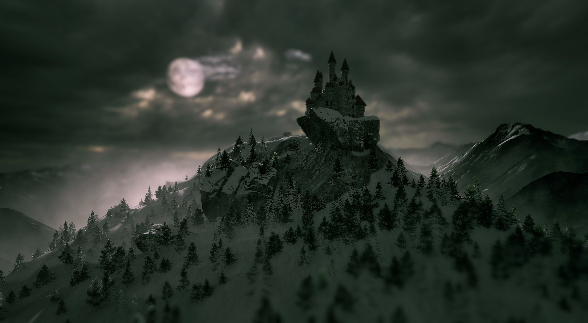

Echoes of Ember
Genre: Fantasy RPG
Enter a world consumed by ancient magic, uncover the secrets of the fallen Amber Lords, and decide the fate of a kingdom on the edge of collapse.
With stunning visuals and engaging gameplay, Echoes of Ember transports players to a richly detailed world where their choices shape the narrative.